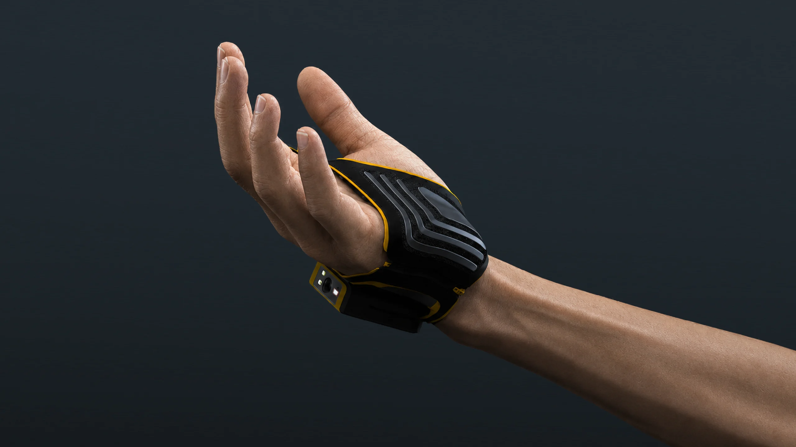
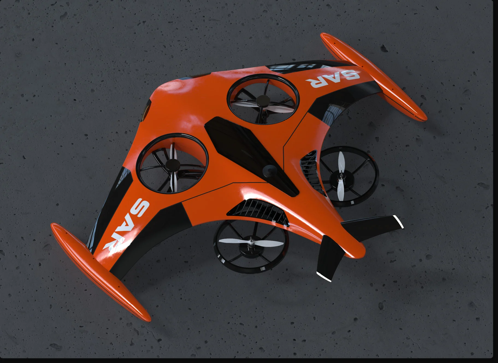

Wearable hardware
ULTRA SCAN 03
A scanning system worn on the hand, so the operator keeps both hands on the work.
View case study →
Search & rescue · IDA Bronze
MANTA 01
An industrial drone that carries flotation to the water before a rescuer has to enter it.
View case study →
Micro-mobility · with Phoenix
FLEX 03
A shared e-scooter designed around folding, indoor parking and a swappable battery network.
View case study →